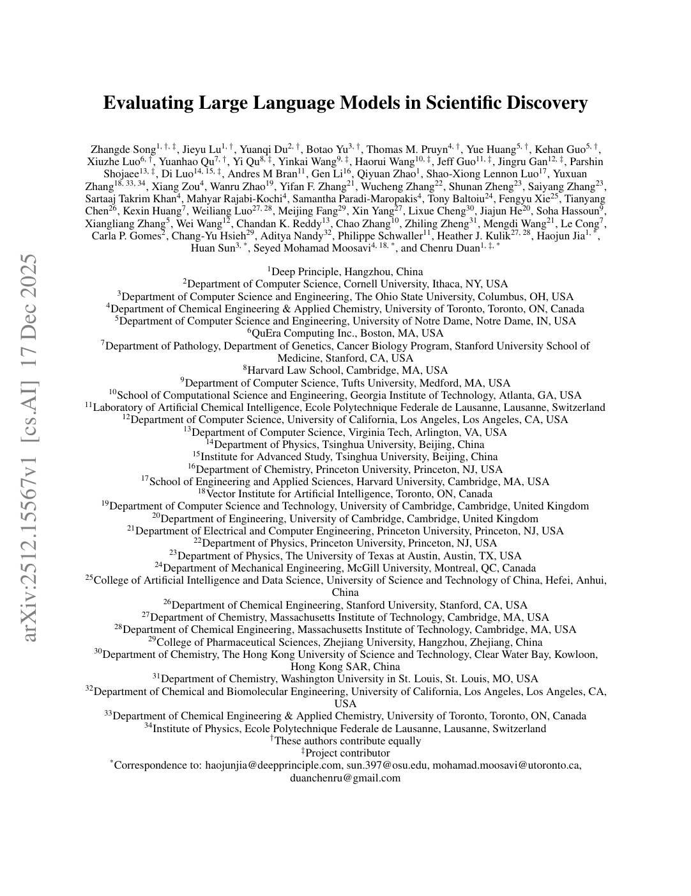

59:58 · 2 OPERE
Intelligenza artificiale e modelli linguistici di grandi dimensioni (LLM).
Il filo del discorso
Il contributo presenta una lettura critica di Evaluating Large Language Models in Scientific Discovery e usa il caso per discutere il rapporto fra linguaggio, metodo e produzione di nuovo sapere. Dr Divago introduce le sigle LLM e SDE, illustra il ciclo di ipotesi, esperimenti, osservazioni e revisione, poi lo confronta con un proprio schema più ampio del lavoro scientifico.
Leggi la sintesi completaRiduci la sintesi
La distinzione fra realtà, dati e modelli conduce a una digressione su energia e informazione. Nella lettura dei risultati il relatore riconosce agli LLM un possibile ruolo di sostegno, ma insiste sulla difficoltà di valutare risposte plausibili, correggere ipotesi e certificare dimostrazioni. L’esempio dell’ultimo teorema di Fermat porta al problema della verifica; Penrose e Heidegger introducono la sua interpretazione filosofica di intelligenza e pensiero. Nella conclusione convergenza, divergenza e il sogno di Kekulé diventano immagini della creatività. La tesi che nessuna macchina possa produrre nuove teorie è un’estensione dichiarata dal relatore: va distinta dalle conclusioni circoscritte del paper e dai suoi riscontri positivi.
I libri nel discorso

Evaluating Large Language Models in Scientific Discovery
Note sul riferimento
Prima pagina del preprint: Preprint arXiv:2512.15567v1, 17 dicembre 2025, 54 pagine nella copia Cornell; esiste una revisione v2 dell’8 maggio 2026.
Prima pagina autentica della versione v1, contenente soltanto titolo, autori, affiliazioni e dati bibliografici. Non è una copertina libraria e non contiene l’abstract. Prima pagina dell’articolo, dalla copia pubblicata da Cornell. Non identificata visivamente la copia fisica mostrata dal relatore.
Evaluating Large Language Models in Scientific Discovery, titolo inglese riconoscibile e autori identificati dal contesto.

Risposta alla domanda: che cos’è l’Illuminismo?
Identificazione probabile
Note sul riferimento
Copertina della raccolta che comprende il saggio sull’Illuminismo: Firenze University Press · Sette scritti politici liberi · 2011 · a cura di Maria Chiara Pievatolo
Copertina del volume cartaceo FUP che comprende il saggio, riscontrato dal catalogo universitario. L’ISBN appartiene alla raccolta; il filmato non annuncia un’edizione e il titolo del saggio è un’identificazione probabile della citazione.
Kant e l’invito ad avere il coraggio di usare il proprio intelletto; titolo del saggio non pronunciato, rimando probabile.